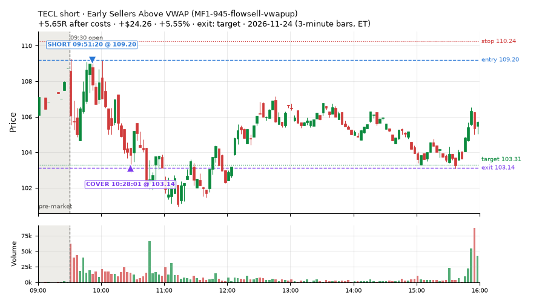
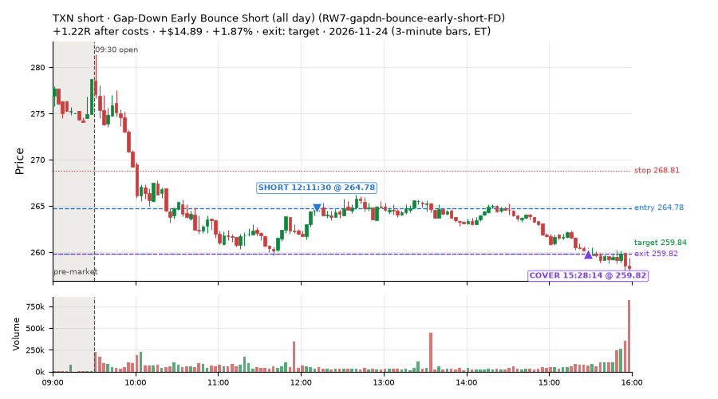
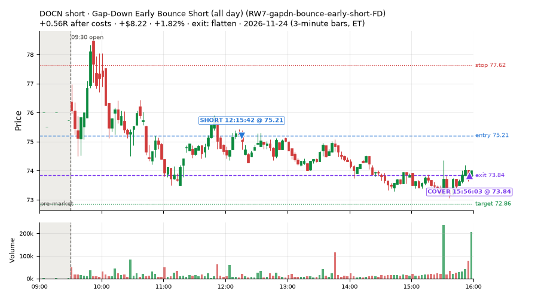
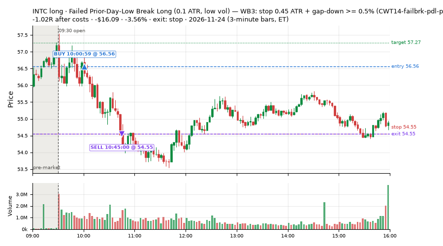
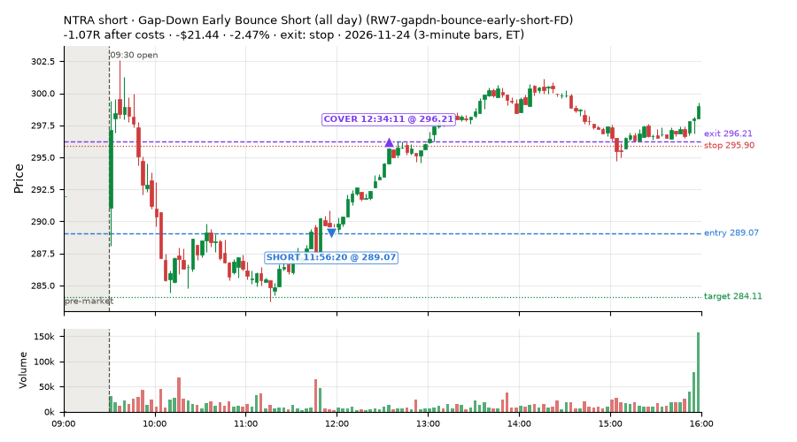
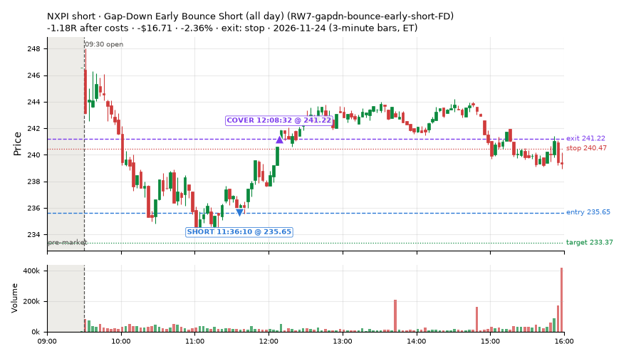
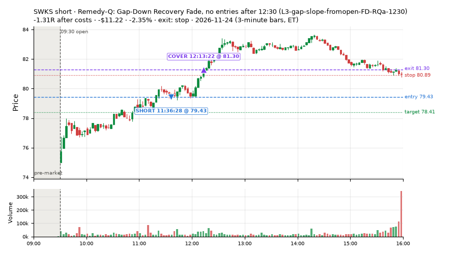

142 trades · win rate 43% · P/L $-279.74
PROBATION: no live setup has passed both locked test periods. 10 owner-directed setups added 2026-10-08 (MarcoFlow top 5 + 5 new), untested live. RW6G1 (RW6 + VWAP band guard) added 2026-10-09, probation.

| Symbol | Setup | Side | In | Out | Entry | Exit | Exit reason | % gained | P/L |
|---|---|---|---|---|---|---|---|---|---|
| TECL | Early Sellers Above VWAP (MF1-945-flowsell-vwapup) | short | 09:51 | 10:28 | 109.20 | 103.14 | target | +5.55% | $24.26 |
| TXN | Gap-Down Early Bounce Short (all day) (RW7-gapdn-bounce-early-short-FD) | short | 12:11 | 15:28 | 264.78 | 259.82 | target | +1.87% | $14.89 |
| DOCN | Gap-Down Early Bounce Short (all day) (RW7-gapdn-bounce-early-short-FD) | short | 12:15 | 15:56 | 75.21 | 73.84 | flatten | +1.82% | $8.22 |
| Symbol | Setup | Side | In | Out | Entry | Exit | Exit reason | % lost | P/L |
|---|---|---|---|---|---|---|---|---|---|
| LUNR | RW7-gapdn-bounce-early-short-FD | short | 11:41 | 14:20 | 8.96 | 9.30 | stop | -3.79% | $-18.70 |
| INTC | CWT14-failbrk-pdl-p10-lowvol-long-WB3 | long | 10:00 | 10:45 | 56.56 | 54.55 | stop | -3.56% | $-16.09 |
| NTRA | RW7-gapdn-bounce-early-short-FD | short | 11:56 | 12:34 | 289.07 | 296.21 | stop | -2.47% | $-21.44 |
| NXPI | RW7-gapdn-bounce-early-short-FD | short | 11:36 | 12:08 | 235.65 | 241.22 | stop | -2.36% | $-16.71 |
| SWKS | L3-gap-slope-fromopen-FD-RQa-1230 | short | 11:36 | 12:13 | 79.43 | 81.30 | stop | -2.35% | $-11.22 |







Signal to fill: median 2s, 90th percentile 3s (142 trades). Bars close each minute; the order follows the bar close.
Best excursion (MFE): median 0.28R; worst (MAE) median 0.72R. 45% of trades never got +0.25R in our favour; 1 reached +1R and still closed at or below 0.
| Symbol | Setup | Best R | Worst R | Closed R |
|---|---|---|---|---|
| BX | RW7-gapdn-bounce-early-short-FD | +0.84 | -1.03 | -1.09 |
| MSFT | RW7-gapdn-bounce-early-short-FD | +0.85 | -1.04 | -1.06 |
| ECHO | GEN-261022-07-Z12lem1p9-FlowShiftlem0p96-ATRdge3p6-AM-BRopgt0p5-t1s1-short | +0.69 | -1.19 | -1.11 |
| AS | RW7-gapdn-bounce-early-short-FD | +0.69 | -1.02 | -1.09 |
| BAM | RW7-gapdn-bounce-early-short-FD | +0.63 | -1.03 | -1.08 |
| Entry time | Trades | Win | Avg R | P/L |
|---|---|---|---|---|
| 09:50-10:30 | 11 | 36% | +0.25 | $-4.51 |
| 10:30-11:30 | 37 | 41% | -0.50 | $-82.76 |
| 11:30-13:00 | 75 | 40% | -0.31 | $-202.46 |
| 13:00-14:00 | 11 | 55% | -0.02 | $0.04 |
| 14:00-16:00 | 8 | 75% | +0.11 | $9.95 |
| Setup | Trades | Win | Avg R after costs | Adj R (net of SPY) | Avg R ex-market (all sessions) | P/L |
|---|---|---|---|---|---|---|
| 15-Minute Opening Range Breakout, Wide Stop (beginner) (BEG-ORB-orb15-inplay-stopOR) | 1.0 | 100% | +0.99 | +0.77 | – | $7.20 |
| Failed Prior-Day-Low Break Long (0.1 ATR, low vol) — WB3: stop 0.45 ATR + gap-down >= 0.5% (CWT14-failbrk-pdl-p10-lowvol-long-WB3) | 23.0 | 74% | -0.00 | -0.09 | -0.12 (beta +0.47, n 107) | $3.22 |
| Generated: Late New-High Short (QQQ down) (GEN-261022-03-NewHOD-Ret15mATRge0p12-SMA20dge0p59-LATE-QQQdn-t05s1-short) | 1.0 | 100% | +0.39 | +0.24 | +0.26 (beta +1.64, n 18) | $2.87 |
| Generated: Morning Breakdown Short (volatile) (GEN-261022-07-Z12lem1p9-FlowShiftlem0p96-ATRdge3p6-AM-BRopgt0p5-t1s1-short) | 6.0 | 17% | -0.73 | -0.63 | -0.78 (beta +0.28, n 6) | $-33.05 |
| Remedy-Q: Gap-Down Recovery Fade, no entries after 12:30 (L3-gap-slope-fromopen-FD-RQa-1230) | 7.0 | 0% | -1.02 | -0.86 | -0.83 (beta -0.15, n 10) | $-63.02 |
| Early Sellers Above VWAP (MF1-945-flowsell-vwapup) owner-directed; holdouts once: Sep-Oct +0.169R n86, Apr-Jun -0.050R n429 | 1.0 | 100% | +5.65 | +4.82 | -0.14 (beta -2.94, n 8) | $24.26 |
| Quiet Downtrend Bounce Short (near-miss) (NM-AMS-N1-quiet-morning-short) | 1.0 | 100% | +0.30 | +0.20 | +0.30 (beta -0.03, n 6) | $3.11 |
| Afternoon VWAP Reclaim Fade (all day) (NS4-pm-vwap-reclaim-oversold-short-FD) | 2.0 | 50% | +0.18 | +0.29 | -0.43 (beta -1.78, n 24) | $4.29 |
| Gap-Down Early Bounce Short (all day) (RW7-gapdn-bounce-early-short-FD) | 98.0 | 38% | -0.34 | -0.21 | -0.09 (beta -0.67, n 415) | $-221.00 |
| Late Sharp Dip in an Uptrend, Long (ULT-14-snap-long) | 1.0 | 100% | +0.33 | +0.46 | – | $2.46 |
| Late Sharp Pop in a Downtrend, Short (ULT-14-snap-short) | 1.0 | 0% | -1.10 | -1.03 | – | $-10.08 |
Market direction (SPY, beta 1) accounted for $-105.35 of today's $-279.74; the rest ($-174.39) came from the setups themselves. Avg R net of SPY: -0.19 (incl. a hedge leg's cost; report only).
20 setups live today. Today: 302 signals, 142 taken, 4 lost because another setup held the symbol (1%). Since 2026-11-12 (9 sessions): 2076 signals, 936 taken, 16 lost to other setups (1%). Peak open positions today 78 of 400 slots. Earnings blackout removed 121 symbols before scanning.
Simulated playing time (not live): 1137 what-if trades of signals not taken, avg -0.06R, 50% winners; of them 16 lost to another setup (avg -0.25R).
Silent: GEN-261028-04-ORBfailUp-RSI14le22-Gaplem1p2-LATE-BRvwgt0p5-holdtr-long · Starved: MF1-945-flowsell-vwapup
| Prio | Setup | Today sig / taken | Sessions | Signals / taken / trades | Taken/day | Expected/day | Lost to other setups | Lost to (setup n) | Top skip reasons | SIMULATED: not-taken n / avg R / win | Verdict |
|---|---|---|---|---|---|---|---|---|---|---|---|
| 1 | Remedy-Q: Gap-Down Recovery Fade, no entries after 12:30 L3-gap-slope-fromopen-FD-RQa-1230 | 39 / 7 | 2 | 79 / 10 / 10 | 5.00 | – | 1 | L3-gap-slope-fromopen-FD-RQa-1230 1 | not shortable / shorts off 41, other 17, spread / quote / size 10 | 69 / -0.63R / 19% | ok 25.0 entries/week |
| 2 | Gap-Down Bounce-off-Low Fade (all day) — WB4: bounce > 0.82 ATR, RSI5 ≥ 50, 75-min hold L3-gap-slope-lowdist-FD-WB4 | 3 / 0 | 6 | 75 / 4 / 4 | 0.67 | – | 0 | – | not shortable / shorts off 59, spread / quote / size 8, other 4 | 71 / -0.49R / 28% | slow 3.3 entries/week; ~18 weeks to 60 trades |
| 3 | Failed Prior-Day-Low Break Long (0.1 ATR, low vol) — WB3: stop 0.45 ATR + gap-down >= 0.5% CWT14-failbrk-pdl-p10-lowvol-long-WB3 | 32 / 23 | 6 | 165 / 107 / 107 | 17.83 | – | 1 | RW7-gapdn-bounce-early-short-FD 1 | spread / quote / size 46, other 11, symbol held by another setup 1 | 57 / -0.14R / 63% | ok 89.2 entries/week |
| 4 | Gap-Down VWAP Loss Short (10% gap) — WB4: below open, real bounce, ADV 20M CWT09-gapdn-vwaploss-g10-short-WB4 | 4 / 0 | 6 | 26 / 1 / 1 | 0.17 | – | 0 | – | not shortable / shorts off 24, spread / quote / size 1 | 25 / -0.38R / 4% | slow 0.8 entries/week; ~72 weeks to 60 trades |
| 5 | Index Dip Bounce 3 3x S&P IDX3-spy075-0955-3x-trail | 0 / 0 | 9 | 1 / 1 / 1 | 0.11 | – | 0 | – | – | 0 / – | slow 0.6 entries/week; ~108 weeks to 60 trades |
| 6 | * Oversold Slope Turn with Breadth Turning Up (near-miss) LD5-st2-breadthup-t05s1-long | 0 / 0 | 9 | 4 / 4 / 4 | 0.44 | – | 0 | – | – | 0 / – | slow 2.2 entries/week; ~27 weeks to 60 trades |
| 7 | Generated: Late-AM Strong-Stock Dip Buy GEN-261021-05-RSIslopelem14-ORHdistge0p42-LAM-BRvwlt0p3-t1s05-long | 0 / 0 | 7 | 42 / 6 / 6 | 0.86 | – | 0 | – | other 25, spread / quote / size 11 | 36 / +0.32R / 56% | slow 4.3 entries/week; ~14 weeks to 60 trades |
| 8 | Quiet Downtrend Bounce Short (near-miss) NM-AMS-N1-quiet-morning-short | 1 / 1 | 9 | 11 / 6 / 6 | 0.67 | – | 0 | – | not shortable / shorts off 3, spread / quote / size 1, other 1 | 5 / +0.11R / 80% | slow 3.3 entries/week; ~18 weeks to 60 trades |
| 9 | Generated: Midday VWAP Loss Buy (fading) GEN-261020-06-VWAPxDn-Slope6lem0p011-BarsSinceHODge35-MID-BRoplt0p5-holdtr-long | 0 / 0 | 7 | 38 / 21 / 21 | 3.00 | – | 1 | RW7-gapdn-bounce-early-short-FD 1 | other 10, spread / quote / size 6, symbol held by another setup 1 | 17 / -0.73R / 12% | ok 15.0 entries/week |
| 10 | Generated: Lunch Trend Buy (MACD rising) GEN-261023-10-MACDhge0p12-VWAPcrossesle0-EMAdiffge0p16-LUNCH-BRvwlt0p4-hold-long | 1 / 0 | 7 | 17 / 9 / 9 | 1.29 | – | 1 | L3-gap-slope-fromopen-FD-RQa-1230 1 | other 6, symbol held by another setup 1, spread / quote / size 1 | 8 / +0.05R / 50% | slow 6.4 entries/week; ~9 weeks to 60 trades |
| 11 | Generated: Late New-High Short (QQQ down) GEN-261022-03-NewHOD-Ret15mATRge0p12-SMA20dge0p59-LATE-QQQdn-t05s1-short | 6 / 1 | 7 | 40 / 18 / 18 | 2.57 | – | 0 | – | not shortable / shorts off 11, spread / quote / size 6, other 5 | 22 / +0.20R / 77% | slow 12.9 entries/week; ~5 weeks to 60 trades |
| 12 | Generated: PM Prior-Low Bounce Short GEN-261022-10-EMAdChgge0p15-ORLdistge0p41-PDLdistle0p14-PM-BRoplt0p5-holdtr-short | 0 / 0 | 7 | 27 / 11 / 11 | 1.57 | – | 0 | – | not shortable / shorts off 10, spread / quote / size 5, other 1 | 16 / -0.17R / 56% | slow 7.9 entries/week; ~8 weeks to 60 trades |
| 13 | Generated: PM Buying-Surge Fade (extended) GEN-261019-10-FlowShiftge0p42-SMA50dge1p7-PM-BRoplt0p5-t1s1-short | 0 / 0 | 7 | 139 / 56 / 56 | 8.00 | – | 1 | GEN-261023-10-MACDhge0p12-VWAPcrossesle0-EMAdiffge0p16-LUNCH-BRvwlt0p4-hold-long 1 | not shortable / shorts off 52, spread / quote / size 15, other 14 | 82 / -0.19R / 43% | ok 40.0 entries/week |
| 14 | Early Sellers Above VWAP MF1-945-flowsell-vwapup | 9 / 1 | 9 | 75 / 8 / 8 | 0.89 | 5.33 | 0 | – | spread / quote / size 44, other 20, not shortable / shorts off 3 | 67 / +0.45R / 52% | starved 0.89 entries/day vs ~5.33 expected |
| 15 | Afternoon VWAP Reclaim Fade (all day) NS4-pm-vwap-reclaim-oversold-short-FD | 15 / 2 | 9 | 69 / 24 / 24 | 2.67 | 3.57 | 0 | – | other 22, spread / quote / size 14, not shortable / shorts off 9 | 45 / +0.10R / 53% | slow 13.3 entries/week; ~4 weeks to 60 trades |
| 16 | Gap-Down Early Bounce Short (all day) RW7-gapdn-bounce-early-short-FD | 163 / 98 | 7 | 771 / 415 / 415 | 59.29 | 59.92 | 10 | CWT14-failbrk-pdl-p10-lowvol-long-WB3 9, CWT05-flush-m05-v3-long 1 | spread / quote / size 133, other 117, per-setup cap 59 | 356 / +0.05R / 56% | ok 296.4 entries/week |
| 17 | Late Sharp Dip in an Uptrend, Long ULT-14-snap-long | 1 / 1 | 3 | 1 / 1 / 1 | 0.33 | – | 0 | – | – | 0 / – | slow 1.7 entries/week; ~36 weeks to 60 trades |
| 18 | Late Sharp Pop in a Downtrend, Short ULT-14-snap-short | 1 / 1 | 3 | 1 / 1 / 1 | 0.33 | – | 0 | – | – | 0 / – | slow 1.7 entries/week; ~36 weeks to 60 trades |
| 19 | Generated: Morning Breakdown Short (volatile) GEN-261022-07-Z12lem1p9-FlowShiftlem0p96-ATRdge3p6-AM-BRopgt0p5-t1s1-short | 22 / 6 | 3 | 22 / 6 / 6 | 2.00 | – | 0 | – | spread / quote / size 11, other 4, not shortable / shorts off 1 | 16 / -0.48R / 25% | slow 10.0 entries/week; ~6 weeks to 60 trades |
| 20 | 15-Minute Opening Range Breakout, Wide Stop (beginner) BEG-ORB-orb15-inplay-stopOR | 5 / 1 | 2 | 7 / 1 / 1 | 0.50 | – | 0 | – | trigger missed between polls 4, spread / quote / size 1, other 1 | 6 / -0.38R / 17% | slow 2.5 entries/week; ~24 weeks to 60 trades |
Every trade is attached as a CSV you can open and edit in Excel or Google Sheets. Live page: https://misiti15.github.io/MCF/live/